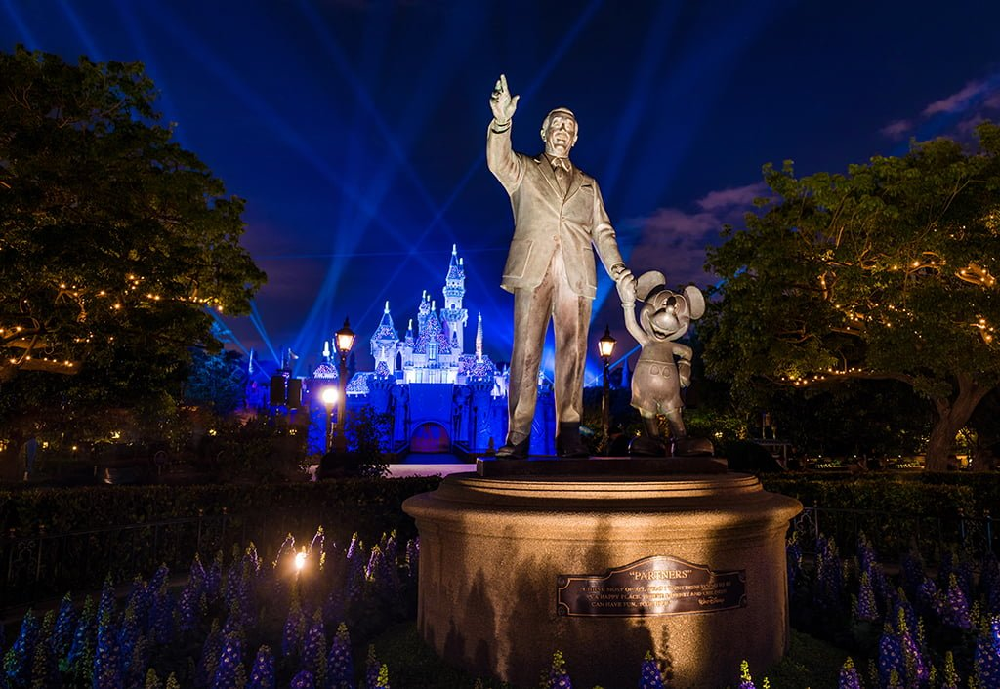

Getting a ticket to Disneyland isn’t the hardest part: it’s getting there. After weeks of frustration, one couple, Ian Bell and Elsa Agnarr, was inspired to document their almost fruitless trip to get to Disney World in Orlando, Florida.
Posting their video on MikMok, which has received over 2.6 million views as of this publication, the couple was amazed to find a community of die-hard Disney fans who related to their struggles.
“I was honestly shocked to see the positive response and laughs that come out of a video we made out of frustration,” said Elsa, a ramen chef in San Francisco who grew up watching Frozen.
Ian, whose last trip to Disney World was cut short forty-one years ago when his eight-year old sister boycotted Disney, was determined to not let anything or anyone stop his family from entering the magical place.
In their Mik, the two began their journey by submitting paperwork to enter the State of Florida, only to be turned down because they did not have the Zika virus vaccine. Therefore, they had to call their physician to register for a vaccination, and request approval from their children’s pediatrician for their children as well. The children's complaints of another vaccine did not go unnoticed in the hospital.
Unpredictable high and low temperatures as the family made their trip across the country were not the only challenges on the road. Back to back hurricanes – Hurricane Kevin and Hurricane Phoebe – made landfall as they were driving down the East Coast, forcing the family to take shelter in overcrowded motels in South Carolina. A spokesperson for Disney wrote in an email that “while we greatly admire our very committed fans, we do hope families and friends make wise decisions and stay safe while traveling to Disney World.”
After five brutal days of travel, the couple arrived past midnight, only to realize that their Disney World tickets were for the evening hours, from 8 pm to 12 am. Putting out multiple expletives after his children went to sleep, Ian ended the video with, “screw climate change.”
Looking to visit the Happiest Place on Earth? Think Again.

Photo: DisneyTouristBlog